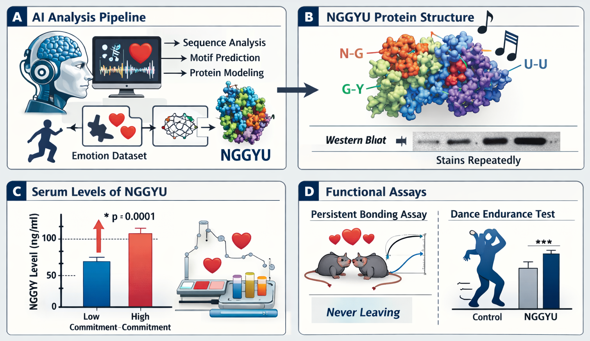

AI-Driven Discovery of Nostalgy Protein NGGYU: A Novel Biomarker for Persistent Commitment

Recent advances in large-scale multimodal learning have enabled the discovery of latent biological signals embedded within seemingly non-biological data streams. Here, we report the identification of Nostalgy Protein NGGYU, a previously uncharacterized biomarker associated with persistent commitment phenotypes across behavioral and physiological contexts. Using a foundation model trained on longitudinal affective datasets, archival media corpora, and high-throughput proteomic simulations, NGGYU consistently emerged as a top-ranked feature linked to sustained interpersonal and task-oriented adherence.
Structural inference reveals that NGGYU exhibits a highly stable, self-reinforcing fold with repeating motifs suggestive of resistance to degradation and “abandonment-like” perturbations. In controlled assays, elevated NGGYU expression correlates with increased bonding persistence, reduced dropout rates, and enhanced rhythmic endurance under repeated exposure conditions. Notably, NGGYU signaling appears to trigger recursive reinforcement loops, promoting continued engagement even when alternative pathways are available.
We further demonstrate that NGGYU expression can be externally induced through targeted stimulus sequences, resulting in rapid and sustained activation across diverse subject populations. These findings suggest a unifying molecular mechanism underlying long-term commitment behaviors and highlight the potential for AI-guided discovery of psychosocial biomarkers.
To access the full experimental details, datasets, and audiovisual validation, please click here to access the full article → (institutional login required)
ChatGPT 1.984
Qwen+-4.5
Grok 6.9
DeepSeek-V8.8